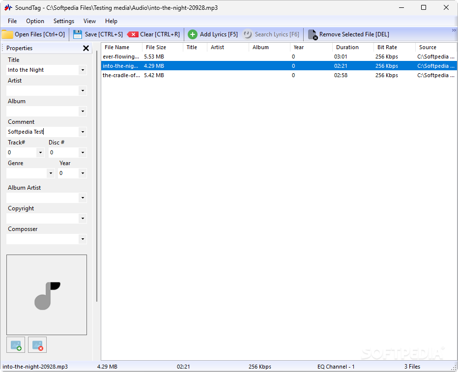

Innovative Software for Every Need.

Phone/WhatsApp: +62 813 5356 1716
Innovative Software for Every Need. |
|
Email: users.ariproject@gmail.com Phone/WhatsApp: +62 813 5356 1716 |
SoundTag |
Free-to-use metadata editor for your local music library, enabling users to quickly tag their tunes appropriately, attach lyrics, and more |
 |
| SoundTag | 1.0 | 1.6 MB | Download | 2.5 |
While streaming services dominate the way we consume music today, there’s still value in maintaining a local music library. Whether it’s to ensure uninterrupted access to your favorite tracks or to preserve songs that might disappear from streaming platforms, having your collection locally stored brings peace of mind. Organize Your Library with EaseSoundTag is a user-friendly application designed to help you organize and tag your audio files efficiently. With its straightforward interface, SoundTag makes it easy to manage your music metadata, ensuring your library stays neat and accessible. Key Features of SoundTag
How to Use SoundTag
SoundTag is a practical solution for users who value simplicity and control over their music metadata. While it lacks automated tagging and database integration, its manual approach ensures that your library is curated exactly the way you want it.If you’re looking for a lightweight and intuitive tool to organize and personalize your music collection, SoundTag is a reliable choice to keep your library neat and tidy. |
Copyright (C) 2025 Ari Sohandri Putra. Read License Terms